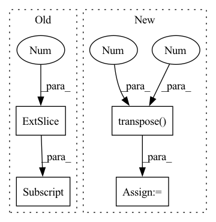

Pattern ID :2772
Before Change
def forward(self, x, **kwargs):
assert x.shape[2] == self.temporal_dim, "invalid number of frames given"
last_frame = x[:, :, -1] // [b, c, h, w]
big_branch = self.big_branch(x).squeeze(2) // [b, c, h, w]
out = self.final_merge(torch.cat([big_branch, last_frame], dim=1))
return outAfter Change
return out
def forward(self, x, pred_length=1, **kwargs):
x = x.transpose(1 , 2 ) // shape: [b, c, t, h, w]
output_frames = []
for t in range(pred_length):
input = x[:, :, -self.temporal_dim:]In pattern: SUPERPATTERN
Frequency: 4
Non-data size: 4
Instances Fragment ID: 11123498
Project Name: ais-bonn/vp-suite
Commit Name: b1ebac921dc35dcaf5e5c3f9fe803c4c9e2d78f8
Time: 2022-01-14
Author: boltres@ais.uni-bonn.de
File Name: vp_suite/models/simple.py
M Class Name: SimpleV2
N Class Name: SimpleV2
M Method Name: forward(3)
N Method Name: forward(2)
M Parent Class: VideoPredictionModel
N Parent Class: VideoPredictionModel
M File Name: vp_suite/models/simple.py
N File Name: vp_suite/models/simple.py
M Start Line: 79
M End Line: 83
N Start Line: 86
N End Line: 92
Before Change
// A: Normalized IFC
ifc = Rss[..., -1]
ifc0 = ifc[..., -1]
ifc0[:, 0] = 1
ifc = ifc / (ifc0.unsqueeze(-1) + EPS)
// B: IFC via EVDAfter Change
ifc0 = ifc[..., -1]
ifc = ifc / (ifc0.unsqueeze(-1) + EPS)
if cholesky_decomp:
A = A.matmul(A.conj().transpose(-1 , -2 ) )
if inverse:
num = torch.einsum("...nm,...m->...n", A, ifc)
else: Fragment ID: 11123484
Project Name: rikorose/deepfilternet
Commit Name: 71013a3ff5bc0ff6435a10f2906e288588c36863
Time: 2022-10-31
Author: Rikorose@users.noreply.github.com
File Name: DeepFilterNet/df/multiframe.py
M Class Name: AnonimousClass
N Class Name: AnonimousClass
M Method Name: compute_ideal_mvdr(3)
N Method Name: compute_ideal_mvdr(1)
M Parent Class:
N Parent Class:
M File Name: DeepFilterNet/df/multiframe.py
N File Name: DeepFilterNet/df/multiframe.py
M Start Line: 405
M End Line: 468
N Start Line: 435
N End Line: 507
Before Change
ifc = torch.view_as_complex(ifc.unflatten(3, (self.frame_size, 2)))
if self.normalize_ifc:
ifc0 = ifc[..., -1]
ifc0[:, 0] = 1
ifc = ifc / (ifc0.unsqueeze(-1) + self.eps)
spec_f = spec_u.narrow(-2, 0, self.num_freqs)
numerator = torch.einsum("...nm,...m->...n", iRnn, ifc) // [B, C, F, N]After Change
spec_u = self.spec_unfold(torch.view_as_complex(spec))
iRnn = torch.view_as_complex(iRnn.unflatten(3, (self.frame_size, self.frame_size, 2)))
if self.cholesky_decomp:
iRnn = iRnn * iRnn.transpose(3 , 4 ) .conj()
ifc = torch.view_as_complex(ifc.unflatten(3, (self.frame_size, 2)))
if self.normalize_ifc:
ifc0 = ifc[..., -1] Fragment ID: 11123491
Project Name: rikorose/deepfilternet
Commit Name: 5bec85aa4fd3c02ad92247d0f9e2a6903f9a8aae
Time: 2022-10-20
Author: Rikorose@users.noreply.github.com
File Name: DeepFilterNet/df/multiframe.py
M Class Name: MfMvdr
N Class Name: MfMvdr
M Method Name: forward(4)
N Method Name: forward(4)
M Parent Class: MultiFrameModule
N Parent Class: MultiFrameModule
M File Name: DeepFilterNet/df/multiframe.py
N File Name: DeepFilterNet/df/multiframe.py
M Start Line: 285
M End Line: 286
N Start Line: 292
N End Line: 295
Before Change
if only_use_last:
// we do not need to output a sequence, so only the last element is needed
x = t.squeeze(x[:, -1, :] , dim=1)
return x, rel, raw
After Change
x, rel, raw = self.layers["attention"](x, time_steps)
// we do not need to output a sequence, so do an amalgamation
x = t.transpose( x, 1 , 2 )
x = t.squeeze(self.layers["fc_amalgamate"](x), dim=-1)
if additional is not None:
// additional should be (B, additional_size) Fragment ID: 11123506
Project Name: iffix/machin
Commit Name: 5b8d4a14723b753d9ee9d6dece151e40b3531c98
Time: 2020-04-25
Author: hanhanmumuqq@163.com
File Name: models/base/tcdnnet.py
M Class Name: TCDNNet
N Class Name: TCDNNet
M Method Name: forward(4)
N Method Name: forward(5)
M Parent Class: nn.Module
N Parent Class: nn.Module
M File Name: models/base/tcdnnet.py
N File Name: models/base/tcdnnet.py
M Start Line: 143
M End Line: 181
N Start Line: 225
N End Line: 232